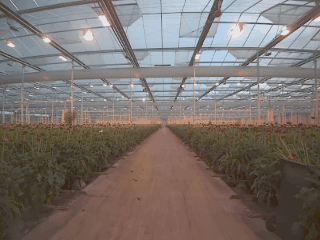
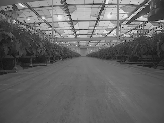
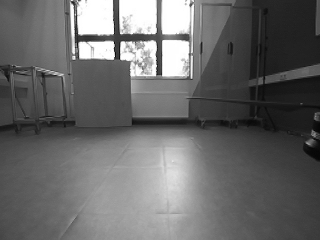
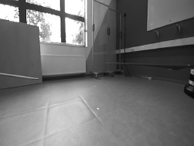
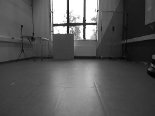
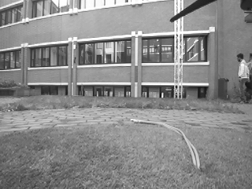

SMARTNav: A Visual-Inertial Dataset for Reliable Robotic State Estimation

On this page we present the SMARTNav dataset, containing raw sensor data recorded by aerial and ground robots. Collected across multiple projects targeting autonomous navigation in industrial settings, the dataset primarily supports evaluation of Visual-Inertial Odometry (VIO). More broadly, it is suitable for vision and LiDAR-based SLAM as well as multi-sensor fusion research.
Downloads
All sequences are provided as ROS 2 bag files. Because each sequence was captured with different hardware for different projects, the available topics vary; however, stereo images and IMU data are included in every sequence. Currently, all bag files are available exclusively via the Saxion Research Cloud Drive (SRCD).
Note: For those sequences of this dataset containing RTK data, px4-msgs (it must be release/1.15 branch) is needed. This dependency will be removed in future versions of dataset.
| Seq. Name | Size[GB] | Descriptions | Link | Snapshot |
|---|---|---|---|---|
| greenhouse_flight_3 | 6.1 | Topics: stereo images IMU RTK Sensors: ZEDX camera Holybro H-RTK F9P |
SRCD | |
| greenhouse_flight_5 | 3.1 | Topics: stereo images IMU RTK Sensors: ZEDX camera Holybro H-RTK F9P |
SRCD | |
| greenhouse_ground_1 | 7.3 | Topics: stereo images camera IMU LiDAR pointcloud LiDAR IMU GPS Sensors: ZEDX camera Holybro H-RTK F9P Ouster OS1-128 |
SRCD | |
| greenhouse_ground_2 | 7.7 | Topics: stereo images camera IMU LiDAR pointcloud LiDAR IMU GPS Sensors: ZEDX camera Holybro H-RTK F9P Ouster OS1-128 |
SRCD |  |
| greenhouse_handheld_1 | 2.4 | Topics: stereo images IMU RTK Sensors: ZEDX camera Holybro H-RTK F9P |
SRCD |  |
| optitrack_flight_1 | 0.5 | Topics: stereo images IMU motion capture Sensors: ZED 2 camera OptiTrack Prime 13 |
SRCD |  |
| optitrack_flight_2 | 1.7 | Topics: stereo images IMU motion capture Sensors: ZED 2 camera OptiTrack Prime 13 |
SRCD | |
| optitrack_handheld_2 | 1.1 | Topics: stereo images IMU motion capture Sensors: ZED 2 camera OptiTrack Prime 13 |
SRCD |  |
| optitrack_handheld_3 | 1.1 | Topics: stereo images IMU motion capture Sensors: ZED 2 camera OptiTrack Prime 13 |
SRCD |  |
| outdoor_flight_3 | 2.5 | Topics: stereo images IMU RTK Sensors: ZED 2 camera Holybro H-RTK F9P |
SRCD | |
| outdoor_flight_4 | 6.8 | Topics: stereo images IMU RTK Sensors: ZED 2 camera Holybro H-RTK F9P |
SRCD | |
| outdoor_flight_5 | 8.7 | Topics: stereo images IMU RTK Sensors: ZED 2 camera Holybro H-RTK F9P |
SRCD | |
| outdoor_flight_6 | 3.5 | Topics: stereo images IMU RTK Sensors: ZED 2 camera Holybro H-RTK F9P |
SRCD |  |
| sidewalk_ground_1 | 35.9 | Topics: stereo images camera IMU LiDAR pointcloud LiDAR IMU GPS Sensors: ZEDX camera Holybro H-RTK F9P Ouster OS1-128 |
SRCD | |
| corridor_ground_1 | 25.8 | Topics: stereo images camera IMU LiDAR pointcloud LiDAR IMU Sensors: ZEDX camera Ouster OS1-128 |
SRCD |
Ground Truth and Calibration
In the table below, for each sequence, a bag file containing ground-truth topic and well as the sensor calibration data are provided. The GT topic type and calibration for each sequence may differ. Our evaluation tool can handle and compare these different topic types.
Acknowledgements
This work was partly supported by the Netherlands Organization for Scientific Research (NWO) via SIA RAAK-Public project (Van bestrijden naar beheersen van de EPR, No.10.015) and SIA RAAK-MKB project (Smart Greenhouses, No.17.014).